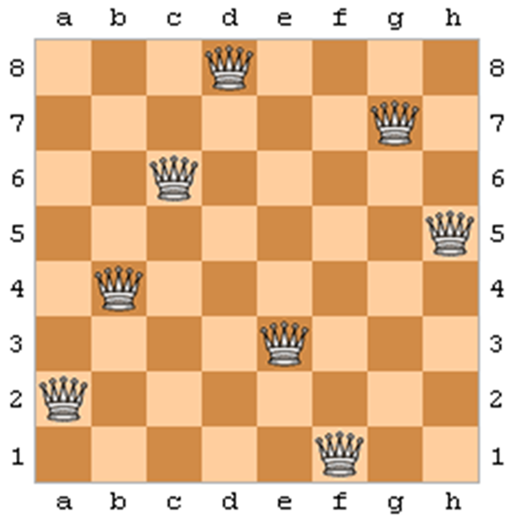
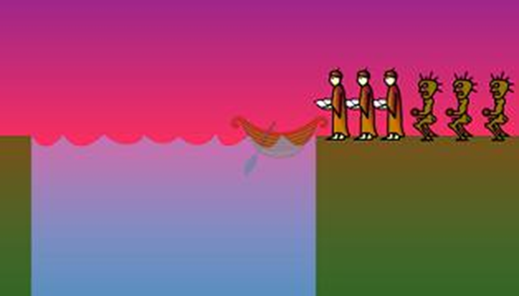
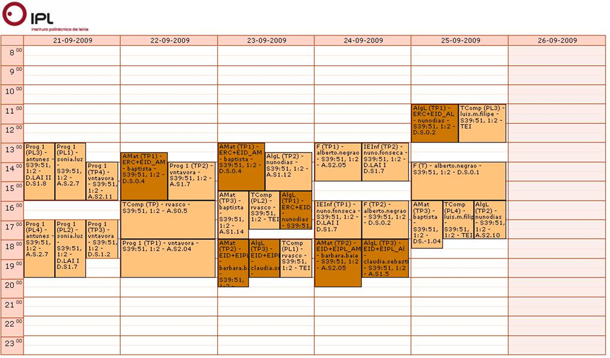
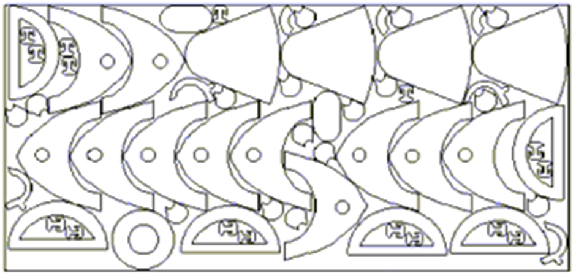
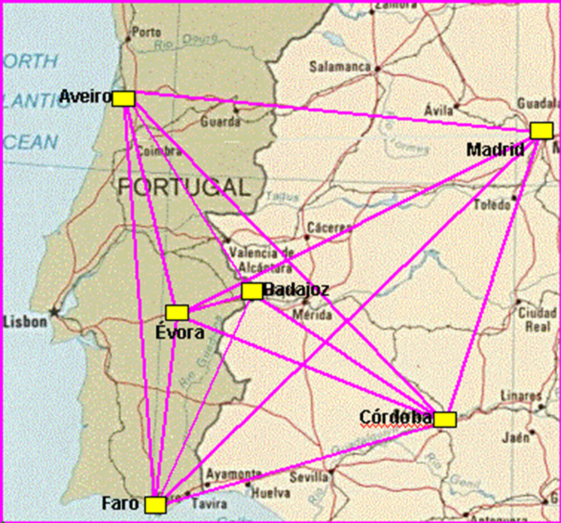
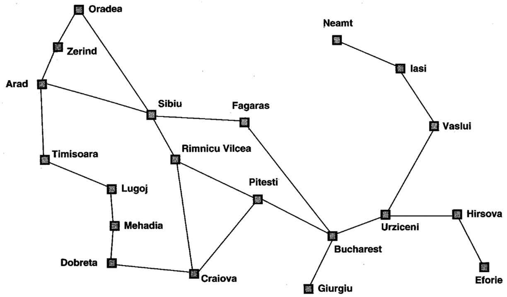
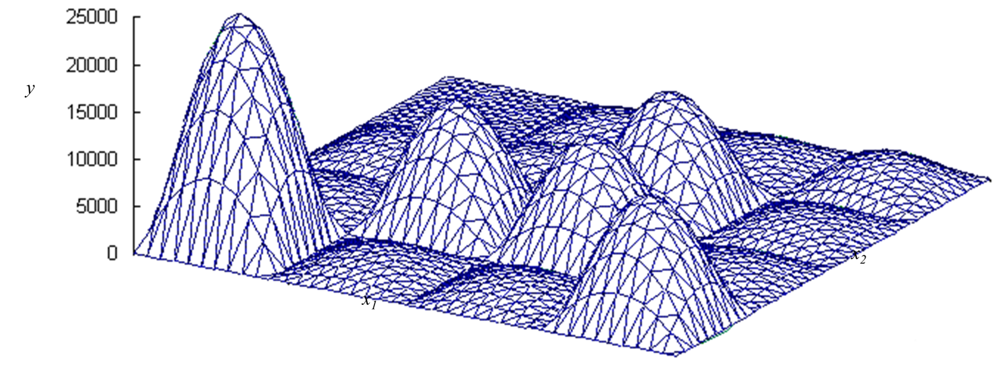
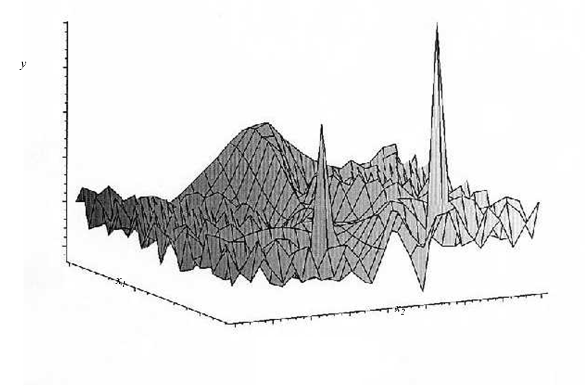
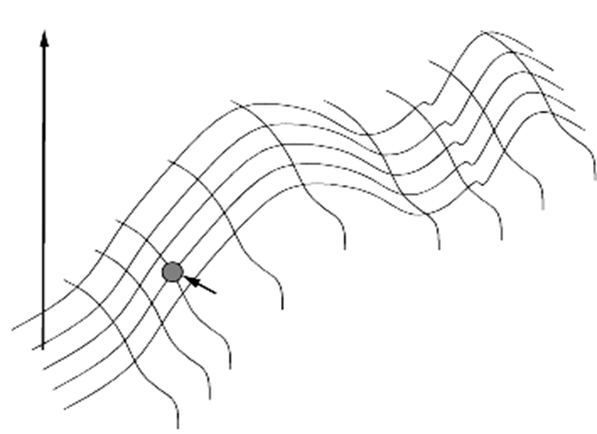
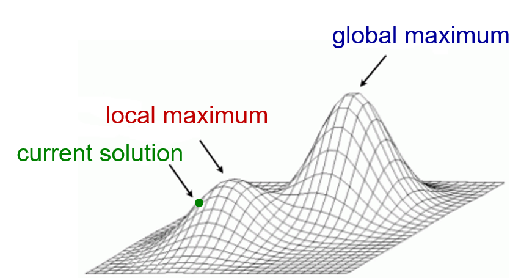

Solving Problems by Searching
AI Applied to Games
Solving Problems by Searching
Gustavo Reis
Based on chapters 3 & 4 of Artificial Intelligence: A Modern Approach
Collaboration:
- Carlos Grilo
- Catarina Silva
- Pedro Gago
Sample Problems
Sample Problems
In AI, many problems can be viewed as search tasks — the agent must navigate a space of possible states or configurations to find a solution.
Two broad families:
- Path problems — find a sequence of actions from start to goal
- Configuration problems — find a state satisfying a set of properties
Classic examples span puzzles, planning, engineering, and — critically for us — game AI.
8-Puzzle

Goal: reach the ordered configuration by sliding tiles.
- State: arrangement of 8 tiles + blank position
- Operators: slide blank ← → ↑ ↓
- Goal test: tiles in order 1–8
- State space: \(9!/2 = 181{,}440\) reachable states
- Optimal solution found with A*; Manhattan distance is the dominant heuristic
Tip
Game relevance: sliding-tile puzzles appear as in-game mini-games; the state-space model is a template for any grid-based planning problem.
Cryptarithmetic
FORTY → 29786
+ TEN → + 850
+ TEN → + 850
------- -------
SIXTY → 31486Goal: assign digits 0–9 to letters so the arithmetic holds.
- State: partial or complete digit assignment
- Operators: assign an unused digit to an unassigned letter
- Goal test: all letters assigned; sum is arithmetically correct
- State space: up to \(10! \approx 3.6\text{M}\) assignments
- Solved efficiently with CSP + backtracking + constraint propagation
Tip
Game relevance: prototype for puzzle games requiring constraint satisfaction — Sudoku, logic grids, code-breaking mechanics.
N-Queens

Goal: place \(N\) queens on an \(N \times N\) board with no two attacking each other.
- State: a board with \(k \leq N\) queens placed (one per row)
- Operators: place a queen in the next row at any non-attacked column
- Goal test: \(N\) queens placed, zero conflicts
- For \(N=8\): 92 valid solutions; brute force is infeasible for large \(N\)
- Canonical benchmark for iterative improvement — start with all queens placed, minimise conflicts
Tip
Game relevance: conflict-free placement — enemy spawning zones, item placement, territory assignment.
Missionaries and Cannibals

Goal: move 3 missionaries and 3 cannibals across a river without cannibals ever outnumbering missionaries on either bank.
- State: \((m_L,\, c_L,\, b)\) — counts on left bank + boat side
- Operators: move 1 or 2 people to the other bank
- Goal test: all 6 people on the right bank
- State space: ~32 valid states — solved in milliseconds with BFS
- Classic for teaching constraint-safe state-space modelling
Tip
Game relevance: escort AI, convoy mechanics — moving units safely under capacity and safety constraints.
Timetabling

Goal: assign classes, rooms, and time slots satisfying all constraints.
- Hard constraints: no room double-booking, teacher availability
- Soft constraints: student preferences, room capacity
- NP-hard in general — exact solution is infeasible at scale
- Solved in practice with local search, genetic algorithms, or integer linear programming
Tip
Game relevance: procedural quest scheduling, faction event calendars, tournament brackets in sports management games.
Space Optimization

Goal: arrange objects in a bounded space to minimise waste or maximise coverage.
- Covers bin packing, strip packing, 2D/3D layout problems
- NP-hard in the general case
- Approximation algorithms and heuristic local search are standard practice
Tip
Game relevance: inventory management systems, procedural map generation, asset placement in level design tools.
Traveling Salesman Problem

Goal: find the shortest tour visiting all cities exactly once, returning to the start.
- State space: \((N-1)!\) possible tours — for \(N=20\): \(\approx 10^{17}\)
- NP-hard — no known polynomial exact algorithm
- Exact: Held-Karp dynamic programming in \(O(2^N \cdot N^2)\)
- Heuristic: nearest neighbour, 2-opt, Lin-Kernighan, genetic algorithms
Tip
Game relevance: NPC patrol route optimisation, waypoint sequencing, delivery quest routing in open-world games.
VLSI Design Layout
Goal: place and route chip components to minimise wire length and avoid signal interference.
- Combines placement (where) and routing (how to connect)
- Both subproblems are NP-hard
- Industry standard solver uses simulated annealing (Cadence, Synopsys)
- Scale: modern chips have billions of components
Note
Prototype of problems where only the final configuration matters — not the path taken to reach it.
Pathfinding

Goal: find a (shortest) path between two points in a graph or grid.
- BFS — optimal on unweighted graphs
- Dijkstra — optimal on weighted graphs
- A* — optimal + efficient with an admissible heuristic \(h(n)\)
Tip
Game relevance: the single most-used algorithm in game AI. A* on navigation meshes (NavMesh) is the industry standard for NPC movement in Unity, Unreal Engine, and Godot.
Two Problem Types
Two Major Problem Types
Type 1 — Path Problems
Find a sequence of actions from start to goal.
- The path itself is the solution
- Order and intermediate states matter
- Algorithms: BFS, DFS, A*, Dijkstra, IDS
- Examples: 8-Puzzle, Missionaries & Cannibals, Pathfinding
Type 2 — Configuration Problems
Find a state satisfying a set of properties.
- Only the final state matters — the path is irrelevant
- Start with a complete (possibly bad) solution and improve it
- Algorithms: Hill-Climbing, Simulated Annealing, Genetic Algorithms
- Examples: N-Queens, VLSI Layout, Timetabling, TSP
Important
The distinction is critical. Applying a path-search algorithm to a configuration problem wastes enormous resources building paths that nobody needs.
Iterative Improvement
Core Idea
Unlike path-based search, iterative improvement algorithms never build a path.
They maintain a single current solution and apply incremental modifications to improve it.
- Also called local search methods
- No frontier, no explored set — very memory efficient
- Suitable for huge or continuous search spaces
- Trade completeness and optimality for speed and scalability
Warning
These algorithms are not guaranteed to find the global optimum. In practice they find good enough solutions far faster than exhaustive methods.
Nomenclature
Depending on the algorithm or context, the following terms are used interchangeably:
| Term | Context |
|---|---|
| state | General search literature |
| configuration | Constraint satisfaction, VLSI |
| solution | Optimisation problems |
| individual | Evolutionary algorithms |
| node | Tree / graph search |
Note
In these slides we use the term solution throughout.
Formal Definition
Let \(y = f(x_1, x_2, \dots, x_n)\) be an objective function (also: evaluation function, fitness function):
- \(y\) measures the quality of a solution — profit, score, number of conflicts, etc.
- \((x_1, x_2, \dots, x_n)\) are the decision variables — queen positions, temperature settings, digit assignments…
- A specific assignment \((x_1, x_2, \dots, x_n)\) is a solution
Goal: find the assignment that maximises (or minimises) \(y = f(\mathbf{x})\).
Solution Space
The solution space (or search space) is the set of all possible assignments of \((x_1, x_2, \dots, x_n)\).


Iterative improvement navigates this space by moving between neighbouring solutions — small modifications of the current assignment.
Why Not Simpler Approaches?
❌ Exhaustive Search
Analyse every solution in the space.
Fails because: space is often too large or infinite.
TSP with \(N=20\): \(\approx 10^{17}\) tours to check.
❌ Random Search
Sample solutions uniformly at random.
Fails because: ignores all information from previous evaluations — extremely wasteful.
❌ Differential Calculus
Use gradients: find \(\mathbf{x}\) s.t. \(\nabla f = 0\).
Fails because: requires \(f\) to be continuous and differentiable. Discrete problems break this. Also trapped by local optima.
Note
Iterative improvement replaces exhaustive enumeration with guided local moves — exploiting the structure of the solution space.
The Landscape Analogy
The Landscape Analogy
Visualise the solution space as a landscape:
- Each point on the ground = a possible solution
- Elevation = quality \(f(\mathbf{x})\) of that solution
- Goal: climb to the highest peak — the global maximum

Obstacles in the Landscape
Local Maximum
Better than all immediate neighbours, but not the global best.
Simple greedy algorithms terminate here, mistaking it for the optimal solution.
Plateau
A flat region where all neighbours have equal quality.
No gradient signal to follow — the algorithm wanders without direction.
Ridge
A narrow elevated region — moving along it improves quality, but stepping sideways drops sharply.
Single-step moves struggle to traverse ridges efficiently.
Important
These are the core challenges every local search algorithm must address. Each method has a different strategy for escaping them.
Hill-Climbing
Hill-Climbing — Algorithm
def hill_climbing(problem):
current = generate_random_solution(problem)
while True:
neighbours = generate_neighbours(current)
best = max(neighbours, key=evaluate)
if evaluate(best) <= evaluate(current):
return current # local maximum — terminate
current = best- Always moves to the best neighbour (steepest ascent)
- Terminates when no neighbour improves the current solution
- No memory of previously visited solutions
- Per-iteration cost: \(O(|\text{neighbours}|)\) — very fast
Hill-Climbing — The Local Maximum Problem

A local maximum is a point \(x\) where \(f(x)\) is highest in the neighbourhood of \(x\), yet there exists another point \(x'\) outside that neighbourhood where \(f(x') > f(x)\).
Warning
Hill-Climbing cannot escape a local maximum — it has no mechanism to accept worse moves, so it terminates and returns a suboptimal solution.
Hill-Climbing — Variants
Steepest Ascent
Evaluate all neighbours; move to the best.
- Most thorough per step
- Higher per-iteration cost
- Best chance of picking the right direction
Stochastic
Pick a random uphill neighbour (not necessarily the best).
- Cheaper iterations
- More stochastic exploration
- Can avoid narrow ridges that trap steepest ascent
Random Restart
Run Hill-Climbing multiple times from random starting solutions; return the best result found.
- Trivially parallelisable
- Effective in practice for many NP-hard problems
- Probability of finding global opt increases with number of restarts
Tip
Game relevance: Random-Restart Hill-Climbing is widely used in procedural content generation — dungeon layouts, terrain generation, puzzle construction.
Simulated Annealing
Motivation
Hill-Climbing always moves uphill — so it inevitably gets trapped in local maxima.
Simulated Annealing (SA) escapes by occasionally accepting worse moves, with a probability that decreases over time.
Inspired by the annealing process in metallurgy: cooling molten metal slowly allows atoms to settle into a globally optimal crystalline structure. Cooling too fast produces defects — local optima.
Simulated Annealing — Algorithm
def simulated_annealing(problem, schedule):
current = generate_random_solution(problem)
T = schedule.initial_temperature
while T > T_min:
neighbour = random_neighbour(current)
ΔE = evaluate(neighbour) - evaluate(current)
if ΔE > 0:
current = neighbour # always accept improvements
elif random() < exp(ΔE / T):
current = neighbour # sometimes accept worse moves
T = schedule.cool(T)
return currentAcceptance Probability
When a worse neighbour is found (\(\Delta E < 0\)), it is accepted with probability:
\[P(\text{accept}) = e^{\,\Delta E \,/\, T}\]
- High \(T\) (start): \(P \approx 1\) — almost any move accepted → broad exploration
- Low \(T\) (end): \(P \approx 0\) — only improvements accepted → focused exploitation
- Large \(|\Delta E|\) (very bad move): lower probability of acceptance even at high \(T\)
Note
Cooling schedule determines how \(T\) decreases over time. Common strategies:
- Geometric: \(T \leftarrow \alpha T\) where \(\alpha \approx 0.95\)
- Logarithmic: \(T \leftarrow T_0 / \log(1 + t)\)
- Adaptive: adjust \(\alpha\) based on acceptance rate
Simulated Annealing — Properties
| Property | Value |
|---|---|
| Complete | Theoretically yes (with sufficiently slow cooling) |
| Optimal | Theoretically yes |
| In practice | Near-optimal with well-tuned schedule |
| Memory | \(O(1)\) — only current solution stored |
Tip
Game relevance: SA is used in VLSI layout, PCB routing, and procedural map generation. The “temperature” metaphor also appears in AI difficulty calibration — controlling how randomly an AI opponent plays.
Beam Search
Beam Search
Instead of one solution, Beam Search maintains a population of \(W\) solutions simultaneously — the beam:
- Initialise with \(W\) randomly generated solutions
- For each solution, generate \(k\) neighbours
- Evaluate all \(W \times k\) candidates
- Keep only the best \(W\) — discard the rest
- Repeat until termination
Note
Beam Search is a middle ground: Hill-Climbing (\(W=1\)) ↔︎ Beam Search ↔︎ Exhaustive Search (\(W=\infty\)).
As a tree search method, it is also a width-limited variant of BFS ordered by \(f(n)\).
Beam Search — Properties & Pitfalls
Advantages:
- Explores multiple regions of the search space simultaneously
- More robust to local maxima than single-solution methods
- Memory bounded: \(O(W \times k)\)
Pitfalls:
- Beam collapse: all \(W\) solutions converge to the same local maximum — diversity is lost
- Not complete or optimal
- Width \(W\) is problem-dependent — too small misses good regions; too large is expensive
Tip
Game relevance: Stochastic Beam Search is used in AI opponent strategy generation, dialogue planning in narrative games, and NPC behaviour optimisation.
Genetic Algorithms
Motivation
Beam Search keeps the best solutions but discards all others. What if we could combine good solutions to produce even better offspring?
Genetic Algorithms (GAs) are inspired by biological evolution:
- A population of solutions evolves over generations
- Better solutions are more likely to reproduce
- Offspring inherit traits from both parents (crossover)
- Mutation introduces variation to prevent premature convergence
Genetic Algorithms — Cycle
population = generate_initial_population(size=N)
while not termination_condition():
fitness = [evaluate(ind) for ind in population]
parents = selection(population, fitness) # favour fitter individuals
offspring = crossover(parents) # combine parent solutions
offspring = mutation(offspring, rate=μ) # small random perturbations
population = survivor_selection(population, offspring)
return best(population)Key Operators
Selection
Choose parents proportional to fitness.
- Roulette wheel: probability ∝ fitness
- Tournament: pick best of \(k\) random candidates
- Elitism: always carry the best solution unchanged
Crossover
Combine two parents into offspring.
- Single-point: swap genes after position \(i\)
- Two-point: swap between positions \(i\) and \(j\)
- Uniform: each gene independently chosen from either parent
Mutation
Random small perturbation to offspring.
- Prevents premature convergence
- Maintains diversity in the population
- Mutation rate \(\mu\) must be low — too high → effectively random search
Tip
Game relevance: GAs are used to evolve NPC behaviours, weapon parameter tuning, and procedural content generation. NEAT (NeuroEvolution of Augmenting Topologies) evolves neural network game controllers.
Other Local Search Methods
Other Methods
Memory-based:
- Tabu Search: maintains a tabu list of recently visited solutions to avoid cycling. Accepts non-improving moves if not forbidden — more principled than random restart.
Population / swarm-based:
- Ant Colony Optimisation (ACO): agents deposit pheromone on good solutions; future agents prefer high-pheromone paths. Excellent for TSP and network routing.
- Particle Swarm Optimisation (PSO): solutions are particles moving through the space, attracted to personal best and global best. Strong on continuous optimisation.
- Bees Algorithm: scouts explore broadly; recruits exploit the best patches found.
Comparison:
| Method | Population | Escape local max |
|---|---|---|
| Hill-Climbing | No | ❌ |
| Simulated Annealing | No | ✅ |
| Beam Search | Yes | Partial |
| Tabu Search | No | ✅ |
| Genetic Algorithm | Yes | ✅ |
| ACO | Yes | ✅ |
| PSO | Yes | ✅ |
Conclusion
Summary
Type 1 — Path Problems
- Solution = sequence of actions
- Algorithms: BFS, DFS, A*, IDS
- Used when the journey matters
Type 2 — Configuration Problems
- Solution = a state with desired properties
- Algorithms: Hill-Climbing, SA, GAs, ACO
- Used when only the destination matters
Important
Key takeaway: choose the algorithm based on problem type, space size, structure of \(f(\mathbf{x})\), and whether completeness or optimality can be traded for speed.
Choosing a Local Search Algorithm
| Algorithm | Best when… |
|---|---|
| Hill-Climbing | Space is well-behaved or random restart is cheap |
| Simulated Annealing | Many local optima; cooling schedule can be tuned |
| Beam Search | Partial diversity needed; memory is limited |
| Genetic Algorithm | Solution encodable as a string; crossover is meaningful |
| Tabu Search | Cycling is the main problem; memory is available |
| ACO / PSO | Combinatorial or continuous optimisation; parallel hardware available |
References
References & Further Reading
- Russell, S. & Norvig, P., Artificial Intelligence: A Modern Approach, 4th ed. (Ch. 3 & 4)
- Millington, I. & Funge, J., Artificial Intelligence for Games, 2nd ed.
- Kirkpatrick, S., Gelatt, C.D., Vecchi, M.P. (1983). Optimization by Simulated Annealing. Science, 220(4598).
- Holland, J.H. (1975). Adaptation in Natural and Artificial Systems. MIT Press.
- Dorigo, M. & Stützle, T. (2004). Ant Colony Optimization. MIT Press.
- Stanley, K.O. & Miikkulainen, R. (2002). Evolving Neural Networks through Augmenting Topologies (NEAT). Evolutionary Computation, 10(2).
- Additional slides by Carlos Grilo, Catarina Silva & Pedro Gago
AI Applied to Games — ESTG IPLeiria